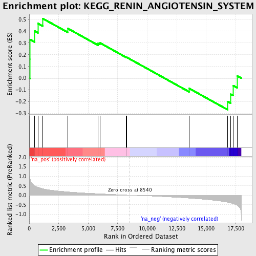

| | | Dataset | GSEA_Cushing_prerank_FC |
| Phenotype | NoPhenotypeAvailable |
| Upregulated in class | na_pos |
| GeneSet | KEGG_RENIN_ANGIOTENSIN_SYSTEM |
| Enrichment Score (ES) | 0.5085058 |
| Normalized Enrichment Score (NES) | 1.3810207 |
| Nominal p-value | 0.101123594 |
| FDR q-value | 0.11504301 |
| FWER p-Value | 0.993 |
Table: GSEA Results Summary

Fig 1: Enrichment plot: KEGG_RENIN_ANGIOTENSIN_SYSTEM
Profile of the Running ES Score & Positions of GeneSet Members on the Rank Ordered List
| PROBE | GENE SYMBOL | GENE_TITLE | RANK IN GENE LIST | RANK METRIC SCORE | RUNNING ES | CORE ENRICHMENT | | 1 | ACE2 | | | 66 | 0.888 | 0.1633 | Yes |
| 2 | MME | | | 68 | 0.884 | 0.3295 | Yes |
| 3 | NLN | | | 463 | 0.500 | 0.4016 | Yes |
| 4 | ANPEP | | | 736 | 0.422 | 0.4659 | Yes |
| 5 | LNPEP | | | 1139 | 0.345 | 0.5085 | Yes |
| 6 | THOP1 | | | 3253 | 0.178 | 0.4243 | No |
| 7 | AGT | | | 5833 | 0.078 | 0.2955 | No |
| 8 | CTSA | | | 5986 | 0.074 | 0.3010 | No |
| 9 | ENPEP | | | 8222 | 0.010 | 0.1784 | No |
| 10 | REN | | | 8251 | 0.009 | 0.1786 | No |
| 11 | ACE | | | 13575 | -0.157 | -0.0883 | No |
| 12 | CTSG | | | 16833 | -0.374 | -0.1994 | No |
| 13 | CMA1 | | | 17092 | -0.411 | -0.1366 | No |
| 14 | CPA3 | | | 17300 | -0.450 | -0.0635 | No |
| 15 | AGTR1 | | | 17642 | -0.538 | 0.0186 | No |
Table: GSEA details [plain text format]
 Fig 2: KEGG_RENIN_ANGIOTENSIN_SYSTEM: Random ES distribution
Fig 2: KEGG_RENIN_ANGIOTENSIN_SYSTEM: Random ES distribution
Gene set null distribution of ES for KEGG_RENIN_ANGIOTENSIN_SYSTEM